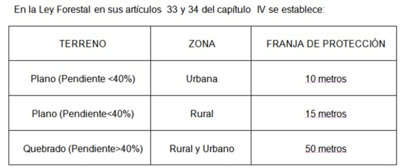

Artículo 33 de la Ley Forestal
Áreas de protección
Se declaran áreas de protección las siguientes:
a) Las áreas que bordeen nacientes permanentes, definidas en un radio de cien metros medidos de modo horizontal.
b) Una franja de quince metros en zona rural y de diez metros en zona urbana, medidas horizontalmente a ambos lados, en las riberas de los ríos, quebradas o arroyos, si el terreno es plano, y de cincuenta metros horizontales, si el terreno es quebrado.
c) Una zona de cincuenta metros medida horizontalmente en las riberas de los lagos y embalses naturales y en los lagos o embalses artificiales construidos por el Estado y sus instituciones. Se exceptúan los lagos y embalses artificiales privados.
d) Las áreas de recarga y los acuíferos de los manantiales, cuyos límites serán determinados por los órganos competentes establecidos en el reglamento de esta ley.
